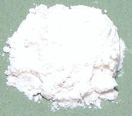

 |
Self Rising FlourGeneral | ||||
| Makes: Effort: Sched: DoAhead: |
1 cup * 10 min Yes |
Self rising flour is more used in England then here in the US, thus it is less available here - but it's very easy to make. | |||
|
|
1 1 1/2 |
c t t |
Flour, all purpose (1) Baking Powder (2) Salt |
|